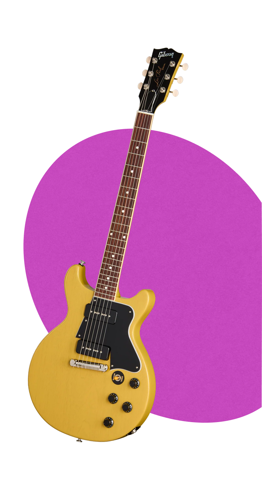
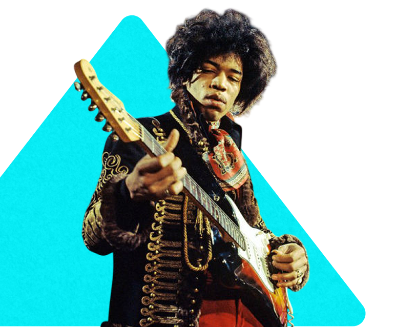
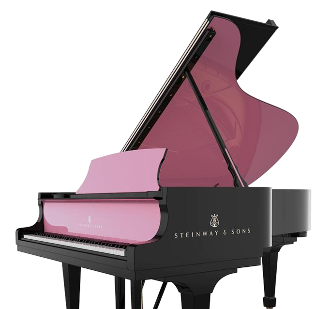
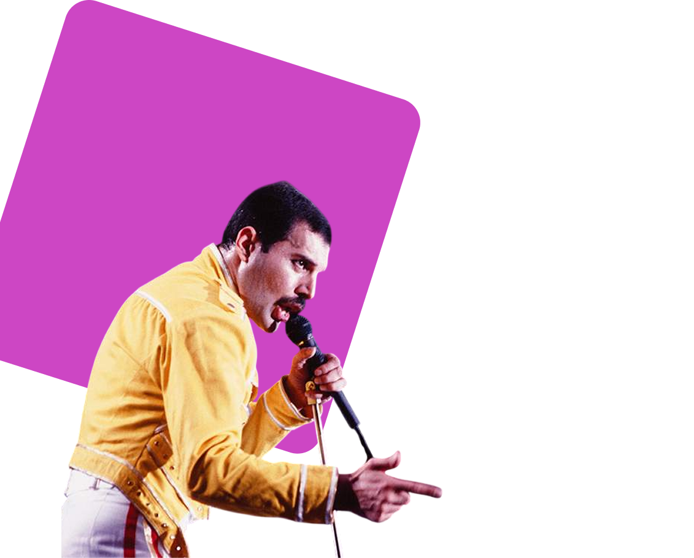
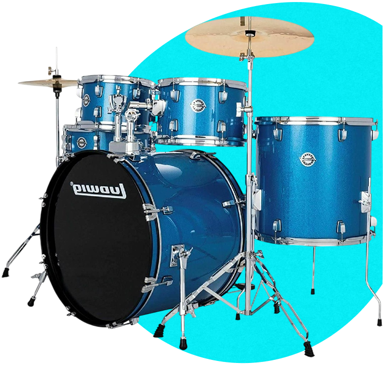

Gibson Les
Подробнее
Самая желанная в мире электрогитара с цельным корпусом, изготовленная вручную в США и формирующая звучание на протяжении многих поколений.
Её особенность — не в универсальности, а в предоставлении уникального, характерного и эталонного звука, построенного на:
- Комбинации пород дерева для теплоты и чёткости.
- Наклеенном грифе для максимального сустейна.
- Хамбакерах для мощного, чистого от помех усиления.
- Культовом дизайне, означающем статус и традицию.

Джимми
Подробнее
Самой культовой моделью, которая является олицетворением самого понятия «гитара Хендрикса», является белый Strat 1968 года выпуска.
На этой гитаре Джими отыграл, пожалуй, самый известный концерт в своей истории — выступление на фестивале Вудсток 1969 года. Этот инструмент носит неофициальное прозвище «Voodoo-Strat» и является сегодня визитной карточкой всего бренда Fender. Хотя, как мы видим, этот инструмент совсем недолго принадлежал Джими, именно ему суждено было стать настоящей рок-н-рольной иконой.

Steinway & Sons
Подробнее
Более 90% концертирующих пианистов мирового уровня выбирают Steinway.
Рояли Steinway & Sons с середины XX века стали фактическим стандартом в музыкальной индустрии: большая часть студийной звукозаписи осуществляется на роялях данной компании, и большинство крупных фортепианных концертов проводится с использованием роялей Steinway & Sons. Каждый инструмент создаётся вручную в Гамбурге и Нью-Йорке с невероятным вниманием к деталям. При должном уходе эти инструменты служат десятилетиями и даже столетиями, сохраняя и увеличивая свою ценность.

Фредди
Подробнее
Легендарным и самым личным инструментом Фредди Меркьюри был его концертный рояль Bechstein Model B (модель 1926–1927 годов выпуска).
На этом рояле были написаны и записаны многие хиты Queen, включая «Bohemian Rhapsody». Этот Bechstein был постоянным спутником Queen в студии. На концертах, особенно в 1970-х. После смерти Фредди он долгое время хранился на студии Mountain Studios в Монтрё, а в 2013 году был приобретён на аукционе анонимным покупателем за 480,000 £.

Ludwig
Подробнее
В 1964 году, когда барабанщик группы The Beatles Ринго Старр играл на ударной установке Ludwig на шоу Эда Салливана, бренд стал популярным и получил признание среди барабанщиков всего мира.
Его фирменной установкой стала модель Ludwig Downbeat в отделке Oyster Black Pearl, который стал визитной карточкой битла. После появления группы в шоу Эда Салливана в 1964 году спрос на ударные Ludwig взлетел до небес. Хотя его техника считалась нестандартной, уникальное, глубокое его барабанов стало неотъемлемой частью звукозаписи Beatles. Ludwig создали один из самых узнаваемых образов в истории рок-музыки.

ДЖОН
Подробнее
Тенор-саксофон Mark VI — легендарный инструмент американского джазового саксофониста Джона Колтрейна. Эта модель выпускалась французской фирмой Henri Selmer Paris с 1954 по 1974 год.
Колтрейн добился характерного, резкого, но красивого звучания тенор-саксофона с помощью металлического мундштука. Он был пионером таких техник, как «листы звука» и таких стилей, как «авангардный джаз». С саксофоном Mark VI Колтрейн записал альбом A Love Supreme в 1965 году. В 2014 году сын Джона подарил саксофон Mark VI Национальному музею американской истории. Инструмент выставлен на выставке «Американские истории» в музее.
Видеоархив
Что важнее: гитара или рука, которая на ней играет?
Как пианино создавало Queen
Партнёры проекта
Проект реализован при поддержке и финансировании: